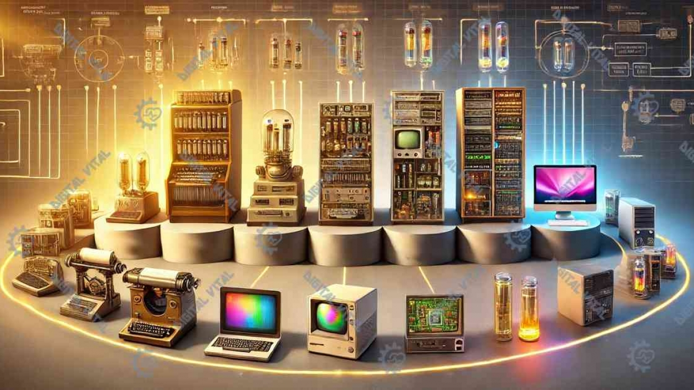

La quinta generación de computadoras se refiere a la etapa de desarrollo de sistemas informáticos que comenzó en 1983 y continúa hasta la actualidad. Esta generación se caracteriza principalmente por el uso de inteligencia artificial (IA), permitiendo que las computadoras realicen tareas que antes solo podían hacer los humanos, como aprender, razonar y tomar decisiones.
Durante esta generación, los microprocesadores experimentaron un salto gigantesco en potencia. La miniaturización de los circuitos permitió incluir millones, y más tarde miles de millones, de transistores en chips cada vez más pequeños y energéticamente eficientes. Esto, junto con la incorporación del procesamiento paralelo y arquitecturas de múltiples núcleos, incrementó la capacidad de realizar tareas de manera simultánea, acelerando procesos que antes requerían mucho tiempo. Además, se introdujeron nuevas arquitecturas de hardware y tarjetas gráficas avanzadas, fundamentales para aplicaciones en gráficos 3D, videojuegos y diseño profesional.
La inteligencia artificial se convirtió en uno de los pilares de esta etapa. Inicialmente aplicada en sistemas expertos y programas de razonamiento lógico, con el tiempo se expandió hacia áreas como el reconocimiento de voz, el reconocimiento facial, la traducción automática y los asistentes virtuales. Herramientas como Siri, Alexa o Google Assistant son ejemplos actuales de estas capacidades. En el ámbito industrial y científico, la IA ha permitido optimizar procesos, diagnosticar enfermedades y analizar grandes volúmenes de datos en cuestión de segundos.
